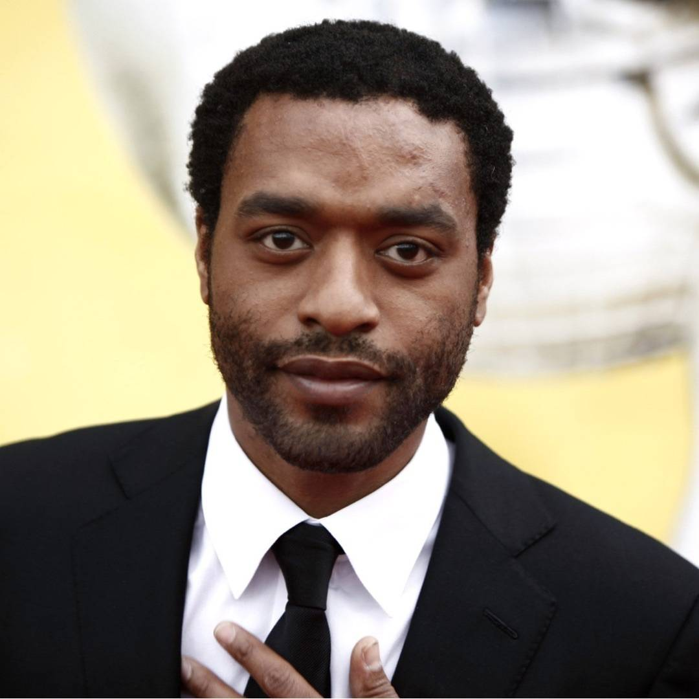
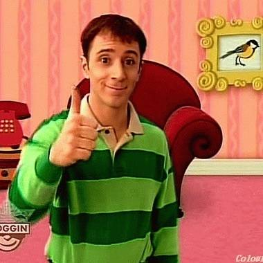
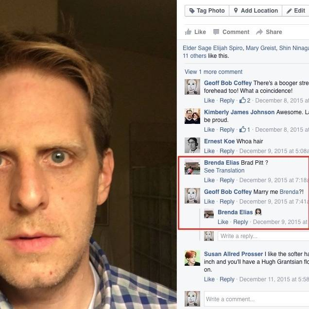
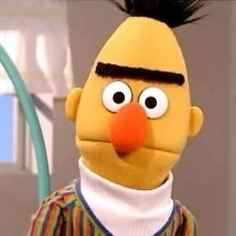

MY ACCEPTABLE CELEBRITY DOPPELGÄNGER LIST
-
🤔 So what're the guidelines here? People I wish I looked like? ...
-
Satya Nadella
Look how warm and approachable and kind and distinguished he looks! [swoon]
-

Chiwetel Ejiofor
Handsomest man in Hollywood.
-
Johnny Depp
Makes people like me with pathetic facial hair feel like we have a chance at being cool looking anyway.
-
Benicio del Toro
I just want to be able to make that stern face when people disappoint me.
-
Jake Gyllenhaal
This is just so I could go hang out with Maggie Gyllenhaal and she wouldn't think it was weird.
-
🤓 Or are we talking about people other people say we look like? ...
-

Steve from Blues Clues
I used to get this all the time and I was totally ok with it. I would give people this thumbs up when they said I looked like him.
-
Joseph Smith
Was told twice (both times by old Mormon ladies) that I look like him. Again, I'm ok with it. What a handsome devil.
-
Brad Pitt
A friend told me I looked like him in a picture a couple of months ago and I immediately asked her to marry me. Also she speaks with a heavy Mexican accent so she pronounces it "Brad Peet" which is super adorable. Basically what I'm saying is I'm now in love with two women.
-

...proof...
Because ego.
-

Bert
Got this in response to my one-time Facebook profile picture. It was spot on. I'm only half ok with this one though because I always identified with Ernie way more. My brother was Bert.
-
...this was the profile picture...
-
Adrian Brody
Really just his nose. And really just the prominence of that nose not the actual look. But anyway I'm ok with it.